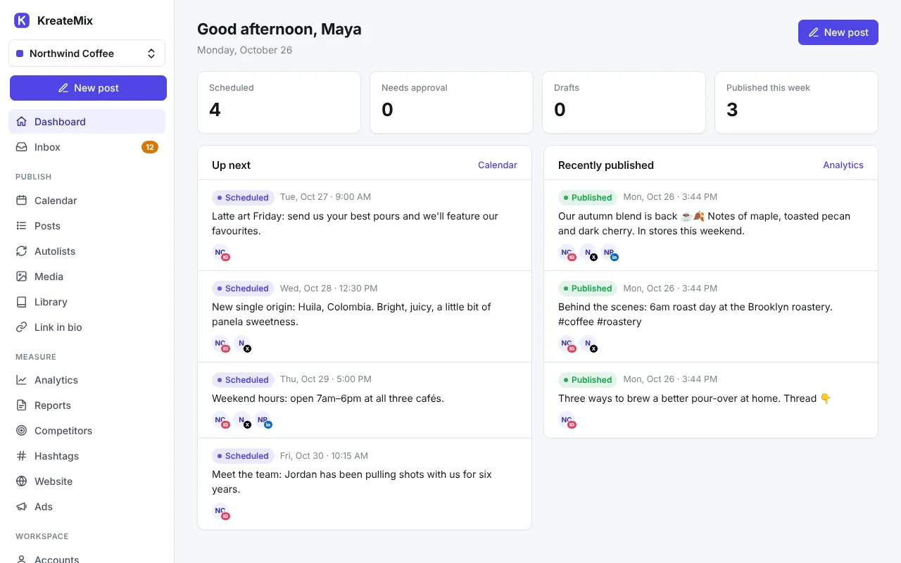
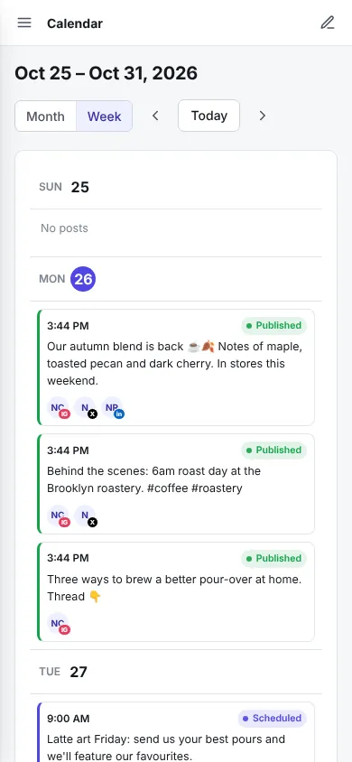

Your own social media scheduler, on a $2 server.
KreateMix schedules posts, tracks analytics and answers comments across 13 networks. It's one index.php file, so it runs on the cheapest server you can rent and your data and account logins stay on it.
- Free and open source
- PHP 8.1 and SQLite
- No Docker, no database server


Everything a social team needs
Post everywhere from one place, see what works, and keep clients and teammates in the loop. Every feature is included; there are no paid tiers.
- X
- Facebook Pages
- Threads
- TikTok
- YouTube
- Bluesky
- Mastodon
- Pixelfed
- PeerTube
- Google Business Profile
Publish
- Composer and calendar
- One post to many accounts, with per-network text, live previews, stories and first comments.
- Autolists and CSV import
- Evergreen queues that post on a schedule, and bulk scheduling from a spreadsheet.
- AI writing
- Bring your own OpenRouter, OpenAI or Anthropic key, or a local Ollama server.
- Works offline
- Install it on your phone, get push notifications, and draft posts without a connection.
Measure
- Analytics
- Followers, engagement and top posts, plus a heatmap of your best times to post.
- Reports
- White-label PDF and PowerPoint reports, share links, and scheduled emails to clients.
- Competitors and hashtags
- Track other accounts' growth and follow hashtags across networks.
- Website analytics
- A cookieless tracker that shows how much traffic social brings you.
Work together
- Inbox
- Comments from seven networks in one place, with replies sent from KreateMix.
- Teams and approvals
- A workspace per brand or client, with roles and approval before anything goes live.
- Link in bio
- A page of your links with click tracking, on your own domain.
- API, MCP and webhooks
- A REST API, an MCP server for Claude and other AI clients, and signed webhooks.
What it costs to run
KreateMix is free. You pay for a small server and a domain name.
The server. A 2 GB VPS from IONOS is $2 a month for the first 3 months. For the lowest long-term price, RackNerd's 2 GB plan is about $3 a month, billed yearly. Compare them.
The domain. Needed for HTTPS and for connecting social accounts. A subdomain of one you already own costs nothing.
The control panel. CloudPanel is free and gives you a dashboard for PHP settings, HTTPS certificates, cron jobs and backups.
Monthly, to start
| 2 GB VPSIONOS, first 3 months | $2.00 |
| Domain nameabout $10 a year | $0.83 |
| CloudPanel | $0.00 |
| KreateMix | $0.00 |
| Total | $2.83 |
How setup works
About 30 minutes, even if you've never run a server. The guide has every click and command.
- Rent a serverA 2 GB VPS running Ubuntu 24.04, with your domain pointed at it.
- Install CloudPanelOne command, then a web dashboard for everything else.
- Create the siteA PHP site in CloudPanel, with free HTTPS turned on.
- Add KreateMixDownload
index.phpinto the site and open your domain to create your account. - Check the schedulerKreateMix adds its own cron job, so there's usually nothing to do.
- Connect your networksAdd API keys for the ones you use. Mastodon, Pixelfed, PeerTube and Bluesky need none.
Open source
KreateMix is licensed under the GNU AGPL v3. You can read, change and run the code. If you run a modified copy for other people over a network, the AGPL asks you to share your changes with them.